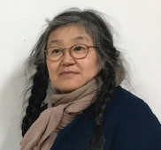
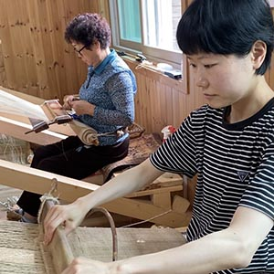
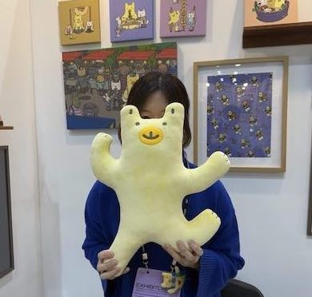
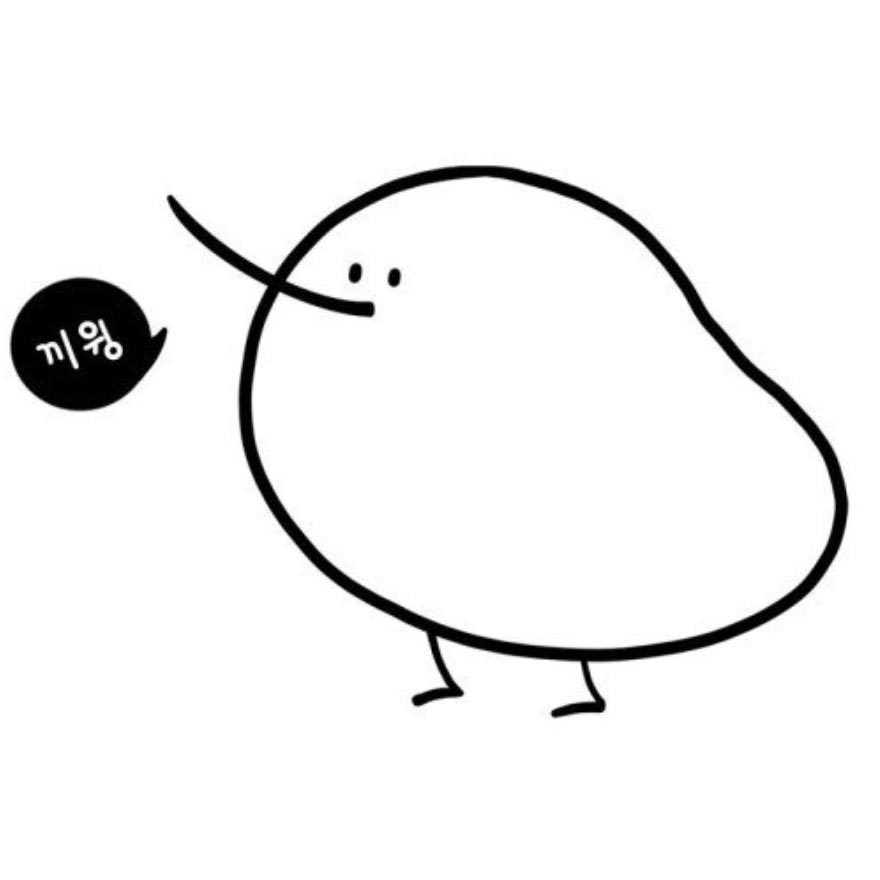

마을 주민들
이진경 Lee Jinkyung
강원도를 사랑하는 화가로, 홍천에서 진돗개 깔리와 함께 살고 있다. 2001년 도쿄 현대미술관 12명의 세계 작가로 선정, 예술의전당, 금호미술관, 성곡미술관, 광주시립미술관, 전북도립미술관, 국립한글박물관, 영국 Asia House, 미국 San Diego Museum of Art 등에서 다수의 개인전 및 그룹전을 열었다. 쌈지길 아트 디렉터를 지냈으며, 2020년 제5회 고암미술상을 수상했다.

강원도를 사랑하는 화가로, 홍천에서 진돗개 깔리와 함께 살고 있다. 2001년 도쿄 현대미술관 12명의 세계 작가로 선정, 예술의전당, 금호미술관, 성곡미술관, 광주시립미술관, 전북도립미술관, 국립한글박물관, 영국 Asia House, 미국 San Diego Museum of Art 등에서 다수의 개인전 및 그룹전을 열었다. 쌈지길 아트 디렉터를 지냈으며, 2020년 제5회 고암미술상을 수상했다.
멍멍씨 Monmon Kim
강원도 정선군의 무형유산인 유평삼베길쌈을 배우는 전수교육생이다. '크렘베어'라는 캐릭터를 그리고 있으며 디자이너와 문필업자로 활동한다. 프랑스 앙굴렘 기반 창작 동아리 Collectif NEBNEB의 회원.

강원도 정선군의 무형유산인 유평삼베길쌈을 배우는 전수교육생이다. '크렘베어'라는 캐릭터를 그리고 있으며 디자이너와 문필업자로 활동한다. 프랑스 앙굴렘 기반 창작 동아리 Collectif NEBNEB의 회원.

야옹이형 Bro Meow
연봉리 카페의 커피 로스팅을 담당하는 커피 디자이너이자 플로리스트. 크렘베어 굿즈를 제작하는 굿즈 디자이너이기도 하며 미감이 예사롭지 않다. 멍멍씨의 형님이다.

연봉리 카페의 커피 로스팅을 담당하는 커피 디자이너이자 플로리스트. 크렘베어 굿즈를 제작하는 굿즈 디자이너이기도 하며 미감이 예사롭지 않다. 멍멍씨의 형님이다.
두두 Doodoo
이진경 작가의 이웃으로, 홍천에 거주하면서 농사를 짓고 있다. 대안학교인 성미산학교에서 환경교육과 생태교육 등에 참여했으며, 마을공동체사업 등 홍천 지역에서 다양한 활동을 하고 있다.

이진경 작가의 이웃으로, 홍천에 거주하면서 농사를 짓고 있다. 대안학교인 성미산학교에서 환경교육과 생태교육 등에 참여했으며, 마을공동체사업 등 홍천 지역에서 다양한 활동을 하고 있다.